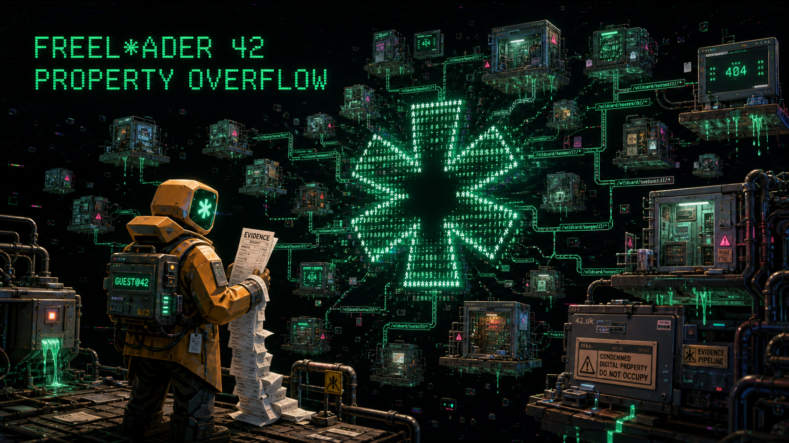

[ WILDCARD PHYSICS ]
Spend one * per attempt to retype the highlighted object for 4.2 seconds: make a phantom solid, arrest a conveyor, or stabilise a collapsing platform.

Forty-two condemned digital properties. 126 evidence receipts. One wildcard directory. Learn each property's daft little rule before the portfolio learns yours.
No account · no tracker · no third-party runtime call · wages remain speculative
Spend one * per attempt to retype the highlighted object for 4.2 seconds: make a phantom solid, arrest a conveyor, or stabilise a collapsing platform.
Choose between connected properties, double back, certify districts, and keep a versioned local checkpoint. Failure is data; rent remains theoretical.
Start in the crisp, lightweight 2D CRT view. Switch live to a high-fidelity 3D diorama with V; both views share the same deterministic platform simulation.
An original 84 BPM procedural score runs across seven bars of 6/8 — 42 eighth-note positions — with distinct tuning and filtered timbral treatment for every district.
Named single-room challenges, readable patrols, precision jumps, conveyor treachery, crumbling ledges, and rapid restarts. Its characters, maps, generated key art, gameplay code, music, and story were created specifically for this project; third-party libraries are identified separately.
Latency is health. Evidence is currency. The management daemon is confident. Every absurd claim has suspiciously precise telemetry underneath it.
| ← → / A D | Move | Space / W / ↑ | Jump |
| E / touch * | Retype target | V | Swap 2D / 3D |
| O | Verified local autopilot | P / Esc | Pause |
| M | Mute | R | Confirm portfolio restart |